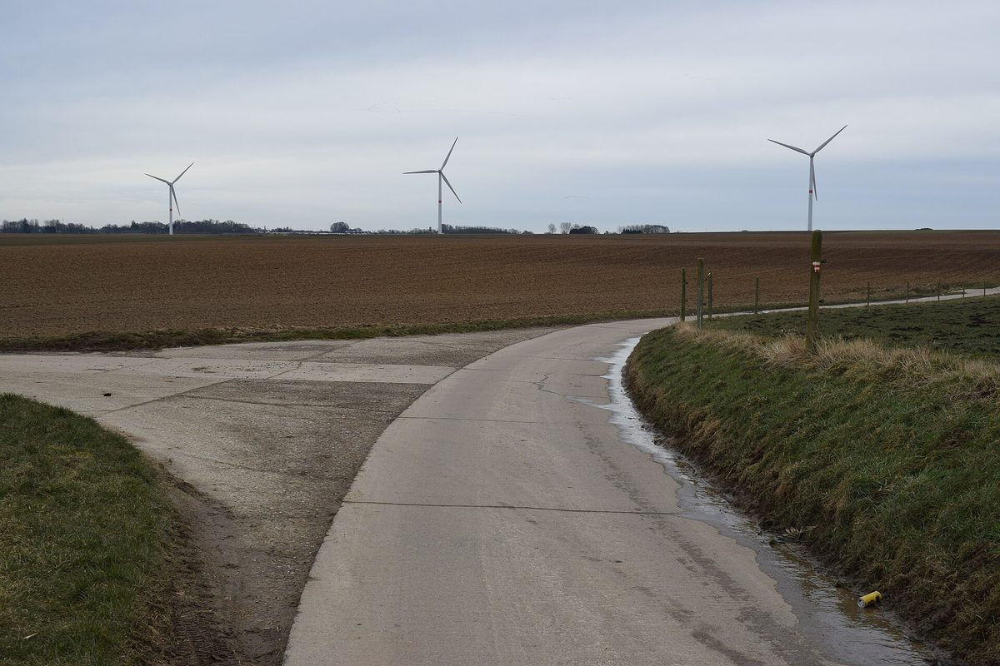

벨기에 헤르 시민협동조합 풍력 7기 사업에 주민 지지 편지 373통…공청 막바지에 지자체에 낼 예정

헤스브에네르지와 협력사 추진, 총 33.6MW·연 87GWh 추정…조합원 1,800명 넘어…반대 주민위원회 '방 제레'는 "편지는 미리 채운 서식"이라며 맞서…8개 지자체 의견 거쳐 왈롱 지역정부가 결정
벨기에 리에주주 헤르(Geer)와 브라이브(Braives)에 풍력발전기 7기를 세우는 사업에 주민 지지 편지 373통이 모였다. 이 사업을 협력사들과 함께 추진하는 시민협동조합 헤스브에네르지(HesbEnergie)는 공청(공개 조사)이 막바지에 이른 11월 4일 이 편지들을 헤르 지자체에 가져가겠다고 밝혔다. 계획은 헤르에 5기, 브라이브에 2기를 세우는 것으로, 조합은 총 설비 용량을 33.6MW, 연간 발전량을 약 87GWh로 추정하며 이는 평균 2만1,000가구가 한 해 쓰는 전기, 헤르 인구의 14배가 넘는 사람이 쓰는 양이라고 설명했고, 생물다양성을 위한 환경 조치도 7헥타르에 걸쳐 함께 한다. 2013년부터 엑스바이(Hesbaye) 지역에서 풍력·바이오매스·소수력·태양광 사업을 개발하고 자금을 모아 온 이 조합은 이미 지역에 풍력발전기 4기를 갖고 있으며, 1,800명이 넘는 조합원이 조합 설비의 공동 소유자로서 새 사업 자금을 보탠다. 조합은 편지에 서명한 주민들이 자기 지역에서 재생에너지 생산이 늘어나기를 바란다는 뜻을 밝힌 것이라고 전했다. 반면 이번 사업을 계기로 꾸려진 주민위원회 '방 제레(Vent Geeré)'는 시가 13년 전 같은 자리의 첫 풍력 사업을 거부했고 2015~2016년 도시계획자문위원회(CCATM)와 함께 풍력 유예를 요청했다는 점을 들어 반대하며, 지지 편지가 미리 채운 서식 여섯 가지에 바탕을 두고 있고 헤르에 살지 않아도 서명할 수 있었다고 주장했다. 위원회는 높이 200m의 발전기가 첫 집에서 약 500m 거리에 들어서 마을 네 곳을 둘러싸고, 야간 소음 기준도 출력을 제한해야 0.1dB 차이로 겨우 맞춘다며 "재생에너지에 반대하는 것이 아니다"라면서 발전기 곁에 살 주민의 말을 들어 달라고 요구했다. 공청은 5일 끝나며, 반대 모임은 이의가 있는 주민에게 5일 오전 10시 전까지 지자체에 편지를 내라고 안내했다. 사업 터는 두 지자체에 걸쳐 있지만 영향을 받는 8개 지자체가 의견을 내야 하고 그 뒤 왈롱 지역정부가 결정하는데, 반대 모임은 2013년에는 지자체가 사업을 거부했지만 이제는 지역정부가 결정하는 만큼 싸움은 이제 시작이라고 했고, 조합은 환경영향평가의 권고를 모두 따랐다며 자신을 보였다. 같은 리에주주의 콩드로즈 지역 아무아(Hamoir)에서도 개발사 엘리시오(Elicio)의 풍력 사업에 주민 모임이 반대 운동을 벌이고 있다.
시민에너지 관점
덴마크는 일찍부터 마을 주민들이 풍력 협동조합을 꾸려 가까운 발전기의 지분을 나눠 가졌고, 이 방식이 풍력을 '외지 회사의 시설'이 아니라 '우리 발전기'로 만들며 풍력 확대의 바탕이 됐다. 풍력은 소음과 경관 때문에 어디서나 반대에 부딪친다는 우려가 있고 이 협동조합 사업에도 반대 주민위원회가 생겼지만, 조합원 1,800명 넘는 협동조합이 지지 편지를 373통 모을 수 있었다는 것은 누가 주인이고 이익이 어디로 가느냐가 주민의 판단을 가르는 큰 기준이라는 점을 보여 준다. 주민이 출자해 설비의 공동 소유자가 되면 인허가 절차는 반대만 맞서는 자리가 아니라 지지를 모으는 자리가 되고, 그만큼 소음·거리 같은 가까운 이웃의 걱정에도 계획 단계에서 성실히 답할 책임이 따른다. 국내 육상풍력도 계획 단계부터 주민이 지분을 갖고 주인이 되는 구조를 기본으로 삼아야 한다.
출처: L'Avenir 2026-11-03 Catherine Duchateau 원문 보기
출처: L'Avenir 2026-11-03 Catherine Duchateau 원문 보기
출처: Qu4tre Liège Média 2026-11-04 Sophie Driesen 원문 보기
ベルギー・ジェールの市民協同組合による風車7基の計画に住民の支持の手紙373通…公聴の終盤に自治体へ提出へ
エスベエネルジーと協力企業が推進、総出力33.6MW・年87GWhと推定…組合員は1,800人超…反対する住民委員会「ヴァン・ジェレ」は「手紙は記入済みのひな形」と反論…8自治体の意見を経てワロン地域政府が決定
ベルギー・リエージュ州のジェール（Geer）とブレーヴ（Braives）に風力発電機7基を建てる計画に、住民の支持の手紙が373通集まった。協力企業とともにこの計画を進める市民協同組合エスベエネルジー（HesbEnergie）は、公聴（公開調査）が終盤を迎えた11月4日、これらの手紙をジェールの自治体に持っていくと明らかにした。計画はジェールに5基、ブレーヴに2基を建てるもので、組合は総出力を33.6MW、年間発電量を約87GWhと見込み、平均2万1,000世帯の年間電力使用量、ジェールの人口の14倍を超える人々が使う量に相当すると説明しており、生物多様性のための環境対策も7ヘクタールにわたってあわせて行う。2013年からエスベー（Hesbaye）地方で風力・バイオマス・小水力・太陽光の事業を開発し資金を集めてきたこの組合は、すでに地域に風力発電機4基を持ち、1,800人を超える組合員が組合設備の共同所有者として新しい事業の資金を出している。組合は、手紙に署名した住民が自分たちの地域で再生可能エネルギーの生産が広がることを望む意思を示したものだと伝えた。一方、今回の計画をきっかけに結成された住民委員会「ヴァン・ジェレ（Vent Geeré）」は、町が13年前に同じ場所での最初の風力計画を拒否し、2015～2016年に都市計画諮問委員会（CCATM）とともに風力のモラトリアムを求めたことを挙げて反対しており、支持の手紙は記入済みの6種類のひな形に基づき、ジェールに住んでいなくても署名できたと主張した。委員会は、高さ200mの風車が最寄りの住宅から約500mの距離に建ち4つの村を取り囲むうえ、夜間の騒音基準も出力を制限してようやく0.1dBの差で満たすにすぎないとして、「再生可能エネルギーに反対しているのではない」としながら、風車のそばで暮らす住民の声を聞くよう求めた。公聴は5日に終わり、反対グループは異議のある住民に対し、5日午前10時までに自治体へ手紙を出すよう呼びかけた。事業予定地は2つの自治体にまたがるが、影響を受ける8自治体が意見を出す必要があり、その後ワロン地域政府が決定する。反対グループは、2013年には自治体が計画を拒否したが今は地域政府が決めるだけに闘いはこれからだとし、組合は環境影響評価の勧告をすべて守ったとして自信を示した。同じリエージュ州コンドロス地方のアモワ（Hamoir）でも、開発会社エリシオ（Elicio）の風力事業に住民グループが反対運動を起こしている。
市民エネルギーの視点
デンマークでは早くから村の住民が風力協同組合をつくって近くの風車の持ち分を分け合い、この方式が風車を「よその会社の施設」ではなく「自分たちの風車」に変え、風力拡大の土台となった。風力は騒音や景観のためにどこでも反対にぶつかるという懸念があり、この協同組合の事業にも反対の住民委員会ができたが、組合員1,800人超の協同組合が支持の手紙を373通集められたことは、誰が持ち主で利益がどこへ行くのかが住民の判断を分ける大きな基準であることを示している。住民が出資して設備の共同所有者になれば、許認可の手続きは反対だけがぶつかる場ではなく支持を集める場になり、その分、騒音や距離といった近隣住民の懸念にも計画段階から誠実に答える責任が伴う。韓国の陸上風力も、計画段階から住民が持ち分を持ち、持ち主になる仕組みを基本にすべきだ。
出典: L'Avenir（ラヴニール） 2026-11-03 Catherine Duchateau 原文を読む
出典: L'Avenir（ラヴニール） 2026-11-03 Catherine Duchateau 原文を読む
出典: Qu4tre Liège Média（キャトル・リエージュ・メディア） 2026-11-04 Sophie Driesen 原文を読む
比利时热尔市民合作社7台风机项目获373封居民支持信…将在公示尾声递交市镇政府
埃斯拜能源合作社与合作企业推进，总装机估计33.6MW、年发电87GWh…社员逾1,800人…反对的居民委员会“旺热雷”反驳称“信件是预先填好的模板”…经8个市镇提出意见后由瓦隆大区政府决定
比利时列日省热尔（Geer）和布赖沃（Braives）建设7台风力发电机的项目，收到了373封居民支持信。与合作企业共同推进该项目的市民合作社埃斯拜能源（HesbEnergie）在公示（公开调查）接近尾声的11月4日表示，将把这些信件送交热尔市镇政府。项目计划在热尔建5台、在布赖沃建2台，合作社估计总装机容量为33.6MW、年发电量约87GWh，相当于平均2万1,000户家庭一年的用电量，也超过热尔现有人口14倍的人的用电量，同时还将在7公顷土地上实施保护生物多样性的环境措施。这家合作社自2013年起在埃斯拜（Hesbaye）地区开发风电、生物质、小水电和太阳能项目并筹集资金，目前已在当地拥有4台风机，1,800多名社员作为合作社设施的共同所有者为新项目出资。合作社表示，在信上签名的居民表达了希望本地区扩大可再生能源生产的意愿。另一方面，因这一项目而成立的居民委员会“旺热雷（Vent Geeré）”表示反对，指出市政府13年前曾否决在同一地点建设的首个风电项目，并在2015～2016年与城市规划咨询委员会（CCATM）一起要求暂停风电开发；委员会还称，支持信是根据6种预先填好的模板写成的，不住在热尔也可以签名。委员会认为，高200米的风机距离最近的住宅约500米，将包围4个村庄，夜间噪音也要在限制出力后才以0.1分贝的差距勉强达标；他们表示“我们并不反对可再生能源”，要求倾听将住在风机旁的居民的意见。公示于5日结束，反对团体呼吁有异议的居民在5日上午10时前致信市镇政府。项目用地横跨两个市镇，但受影响的8个市镇须提出意见，之后由瓦隆大区政府作出决定；反对团体表示，2013年是市镇否决了项目，如今改由大区政府决定，因此斗争才刚刚开始，合作社则表示已遵循环境影响评估的全部建议，对项目充满信心。在同属列日省的孔德罗兹地区阿穆瓦（Hamoir），开发商埃利西奥（Elicio）的风电项目也遭到居民团体发起反对运动。
市民能源视角
丹麦很早就有村民组建风电合作社、分持附近风机的股份，这种方式让风机从“外地公司的设施”变成“我们自己的风机”，成为风电扩张的基础。有人担心风电因噪音和景观问题到处都会遭到反对，这个合作社项目也出现了反对的居民委员会，但社员超过1,800人的合作社能收集到373封支持信，说明谁是主人、收益流向哪里，是左右居民判断的重要标准。居民出资成为设施的共同所有者后，许可程序就不只是反对声浪对峙的场合，而成为汇聚支持的场合，同时也意味着要在规划阶段就认真回应噪音、距离等近邻居民的担忧。韩国的陆上风电也应以居民从规划阶段起持有股份、成为主人的结构为基本模式。
来源: L'Avenir（前途报） 2026-11-03 Catherine Duchateau 查看原文
来源: L'Avenir（前途报） 2026-11-03 Catherine Duchateau 查看原文
来源: Qu4tre Liège Média（列日Qu4tre媒体） 2026-11-04 Sophie Driesen 查看原文
373 residents' letters back citizen co-op's seven-turbine wind project in Geer, Belgium, to be handed in as public inquiry nears its end
Project led by HesbEnergie and partners estimated at 33.6MW and 87GWh a year; the co-op has more than 1,800 members, but residents' committee Vent Geeré pushes back, calling the letters pre-filled templates; after opinions from eight municipalities, the Walloon regional government will decide
Residents have written 373 letters of support for a project to build seven wind turbines in Geer and Braives in Belgium's Liège province. HesbEnergie, the citizen cooperative developing the project with its partners, said on November 4, as the public inquiry neared its end, that it would take the letters to Geer's municipal administration. The plan calls for five turbines in Geer and two in Braives, which the co-op estimates at 33.6MW of total capacity and about 87GWh a year, equal to the average annual consumption of 21,000 households or of more than 14 times Geer's current population, and it also includes environmental measures for biodiversity on seven hectares. Active in the Hesbaye region since 2013 developing and financing wind, biomass, small hydro and solar projects, the co-op already has four turbines in the area, and its more than 1,800 members are co-owners of its installations who help fund new projects. The co-op said the residents who signed the letters were showing that they want renewable energy production to grow in their own area. Vent Geeré, a residents' committee formed in response to the project, opposes it, recalling that the municipality rejected a first wind project on the same site 13 years ago and, in 2015-2016, asked together with its planning advisory commission (CCATM) for a moratorium on wind power; it argues that the support letters are based on six pre-filled templates and could be signed without living in the municipality. The committee says the 200-metre turbines would stand about 500 metres from the nearest homes and encircle four villages, and would meet the night-time noise standard only with curtailment and by a margin of 0.1 dB; "we are not against renewable energy," it said, asking that the people who will live at the foot of the turbines be heard. The inquiry closes on November 5, and the opponents urged residents who object to write to the municipality before 10 a.m. that day. Although the site spans two municipalities, eight affected municipalities must give an opinion before the Walloon regional government decides; the opponents said that in 2013 the municipality had rejected the project but that the region now decides, so the fight was only beginning, while the co-op said it was confident, having followed all the recommendations of the environmental impact study. In Hamoir, in the Condroz area of the same province, a residents' group is also campaigning against a wind project by developer Elicio.
Citizen Energy View
In Denmark, villagers long ago began forming wind cooperatives and sharing stakes in nearby turbines, an approach that turned turbines from "an outside company's facility" into "our turbine" and laid the ground for wind power's growth. There are worries that wind farms meet opposition everywhere over noise and landscape, and even this co-op project has drawn a residents' committee against it, yet the fact that a co-op with more than 1,800 members could gather 373 letters of support shows that who owns the turbines and where the profits go is a major factor in how residents judge them. When residents invest and become co-owners, the permitting process becomes a place to gather support rather than only a battleground, and that brings a duty to answer close neighbours' concerns about noise and distance seriously from the planning stage. Korea's onshore wind projects, too, should make resident stakes and ownership from the planning stage the default model.
Source: L'Avenir 2026-11-03 Catherine Duchateau Read the original
Source: L'Avenir 2026-11-03 Catherine Duchateau Read the original
Source: Qu4tre Liège Média 2026-11-04 Sophie Driesen Read the original